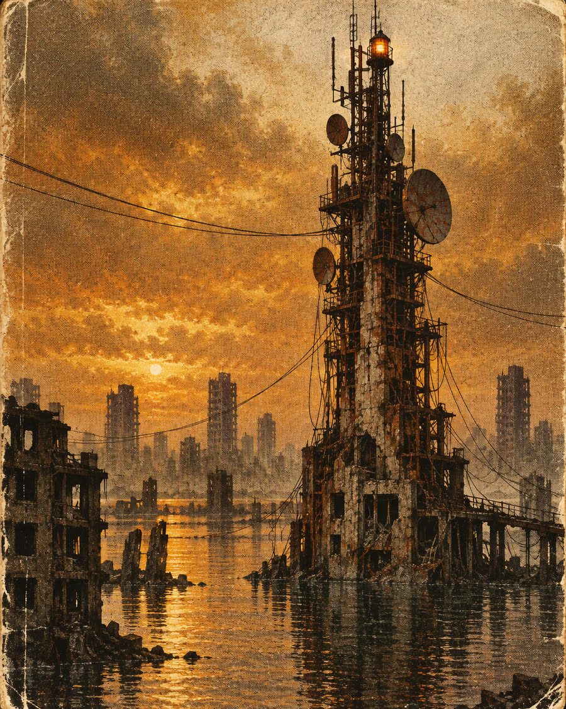

UNIT 01REV. 04
Identity systems
- Naming
- Marks & wordmarks
- Type systems
- Guidelines
- Motion signatures
Independent design office / London / Est. 2005
We build identities, films and machines for a world running on salvage. Things that look like they survived something, because they did.

The future arrived damaged.
We design for it anyway.
BAD DESIGN LTD is a small, independent office in London. We work at the seam between the analogue and the machine: identities with wear on them, films with grain, interfaces that feel wired rather than rendered. We are not interested in polish for its own sake. We are interested in things that hold together when the power dips.
> MOUNT /SALVAGE ............ OK > CALIBRATE TYPE ........... OK > CHECK SIGNAL ............. 12% > WARNING: OPTIMISM LOW > READY
Everything can be rebuilt. The best material is usually already on the floor.
We manufacture it out of noise, then make it look like it cost nothing.
A surface should say where it has been. Perfection is a tell.
Stills from ONE GOD, an in-house short built from keyframes, procedural sound and stubbornness. The film is an animatic; the point is the tone, not the pipeline.
Tell us what is broken. We will tell you whether it can be rebuilt, and what it costs. No decks required. A sentence and a deadline will do.
hello@baddesignltd.com